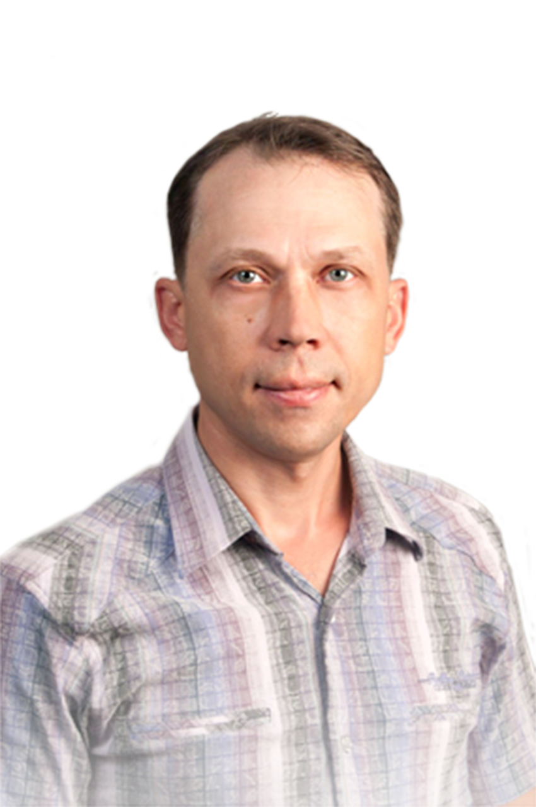
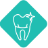
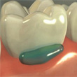
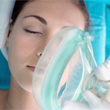
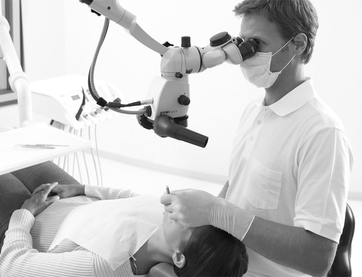

Лечение зубов и дёсен, а также профилактический осмотр у стоматолога – это основа красивой и здоровой улыбки. Если вы при мысли о стоматологе всё ещё слышите звук бормашины и невольно вздрагиваете – скорее об этом забудьте!
Центр дентальной имплантации оснащён современным оборудованием и материалами, которые позволяют лечить зубы без боли и страха.
Терапевтическая стоматология

- Ваш доктор
- Глущенко Павел Анатольевич
- Специализация: Врач-стоматолог-терапевт
- Образование: Омский медицинский институт
-
 22 года стаж работы
22 года стаж работы

- Ваш доктор
- Якушева Елена Александровна
- Специализация: Врач-стоматолог-терапевт, детский стоматолог
- Образование: Кемеровская государственная медицинская академия
-
7 лет стаж работы
Терапевтическая стоматология
-
 Современный подход Несколько видов анестезии, бинокуляры, уникальные диагностические аппараты дают нашим стоматологам проявить своё мастерство на высшем уровне.
Современный подход Несколько видов анестезии, бинокуляры, уникальные диагностические аппараты дают нашим стоматологам проявить своё мастерство на высшем уровне. -
Опытная команда Но для качественного лечения не менее важен и опыт специалистов! Наша команда на протяжении нескольких лет работает устоявшимся коллективом. За это время мы лечили зубы разной сложности, исправляли ошибки других клиник и заработали доверие десятков тысяч пациентов.
Услуги терапевтической стоматологии
 Лечение кариеса неотложных форм
Лечение кариеса неотложных форм
В ЦДИ производится лечение кариеса зубов традиционными методами с использованием для восстановления материалов последних поколений лучших мировых производителей, в соответствии с высокими стандартами требований эстетики и функциональности. Применяемые в ЦДИ материалы обладают свойствами биосовместимости высокоточным прилеганием, оптимальны с позиции эстетики. Специалисты терапевты-стоматологи обладают навыками восстановления анатомической формы зубов, что значительно улучшает эстетические и функциональные результаты работы по лечению кариеса зубов.
В случаях поверхностного поражения возможно проведение лечения неинвазивного характера, то есть без удаления пораженных тканей зуба. Такое лечение стало возможным с появлением современных лечебных материалов, действие которых направлено на восстановление нарушенного в результате кариеса минерального состава эмали. Такие методы лечения особенно актуальны в практике детской стоматологии или в случае непреодолимого страха перед традиционным лечением, однако применимы только ограниченных случаях.
Читать далее
 Лечение осложненных форм кариеса (лечение каналов)
Лечение осложненных форм кариеса (лечение каналов)
В ЦДИ проводится в соответствии с высокими стандартами и достижениями мировой стоматологии. Такими технологическими на сегодняшний момент является применение сверх гибких инструментов на основе никель - титановых сплавов. Такие инструменты обладают свойствами сверх эластичности, что повышает качество обработки искривленных каналов зубов и каналов со сложным анатомическим строением. В конечном итоге значительно разрушенные зубы с инфицированными каналами подвергаются лечению и служат после лечения длительное время, хотя раньше о сохранении таких зубов не могло быть и речи.
Лекарственные средства и материалы для лечения и пломбирования каналов соответствуют всем предъявляемым к ним требованиям в соответствии со стандартами биосовместимости и низкой токсичности, они не содержат мышьяка и других вредных веществ, в большинстве случаев не вызывают аллергии.
Читать далее

Лечение каналов
Если воспаление достигло каналов зуба, это не причина его удалять. Чистые и качественно запломбированные каналы смогут сохранить зуб. Современное оборудование, высокая квалификация наших стоматологов позволяют спасти даже сильно разрушенные каналы, а также подготовиться к дальнейшему протезированию. Ведь теперь этот зуб здоров и может стать опорой для мостов и коронок!
Лечение дёсен
Заболевание дёсен, а также костной ткани, где расположен корень зуба, требуют интенсивного лечения, которое в клинике ЦДИ оказывают врачи-пародонты с многолетним опытом. Ведь только своевременное лечение поможет сохранить зубы. Наши стоматологи остановят воспалительный процесс, сохранят здоровье зубов и восстановят их работу.
Лечение зубов без страха и боли - наш стандарт
Ваш комфорт - обязательное условие качественного лечения. Ведь стоматологу важно быть в полной уверенности, что вы расслаблены и случайно не дрогнете в самый ответственный момент. Поэтому в нашем арсенале - несколько видов обезболивающих препаратов, которые снимут тревогу и неприятные ощущения при любом виде лечения.
Виды анестезии

Аппликационная анестезия
Вас пугает даже обезболивающий укол? Тогда этот вид анестезии вам понравится. На нужный участок мы просто наносим гель или спрей, который на время заморозит чувствительность.

Инъекционная анестезия
В более серъёзных случаях требуется обезболивающий укол. Он проводится тоненькой иглой, но перед этим мы обработаем участок специальным спреем, так что вы ничего не почувствуете.

Лечение зубов во сне
Если вас пугает даже вид стоматологических инструментов, мы предлагаем вам уснуть на время операции. Для этого анестезиолог погрузит вас в медицинский сон с помощью седативного препарата. Он абсолютно безвреден и показан практически во всех случаях.
Лечим зубы под микроскопом
Лечение вслепую - в прошлом! В ЦДИ стоматологи вооружены до зубов. Микроскоп позволяет видеть рабочую область, увеличенную в 30 раз. Это обеспечивает ювелирную точность в работе и повышенное внимание каждому зубу. Изображение с прибора передаётся на экран, так что вы сами можете наблюдать за лечением и видеть все этапы виртуозного исполнения вашего стоматолога.

Стоматология для беременных
Будущим мамам необходимо посетить стоматолога не менее 3 раз за период беременности. Ведь заботливый организм каждый свой свободный минерал отдаёт ребёнку, из-за чего мамины зубы находятся в большой опасности и должны регулярно осматриваться стоматологом.
А в случае кариеса необходимо немедленное лечение, чтобы к появлению малыша устранить любые риски передачи вредных микробов.
В нашей клинике предусмотрены новейшие анестетики, которые не проникают к малышу сквозь плацентарный барьер и являются более безопасными как для мамы, так и для ребёнка.
Преимущества лечения в ЦДИ
Комфортное лечение без боли
Высокий уровень технологий
10 лет безупречной работы
Здоровые зубы -
основа успешной жизни!
основа успешной жизни!
Мы знаем, что комфорт для вас так же важен, как и качество лечения.
Поэтому гордость клиники - не только сильная команда профессиональных
стоматологов, но и повышенное внимание к современным методикам, которые
максимально облегчают ваше состояние и в корне меняют представление о
стоматологии. Убедитесь сами!